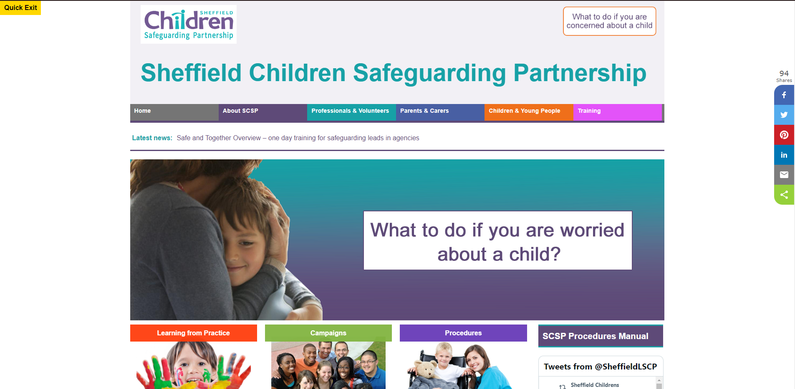

Website Development
Sheffield Children Safeguarding Partnership Website
Professional | Taylorfitch Webforms | HTML | CSS | Mentor | Excel Improvements
I previously was the lead developer on the Sheffield Children Safeguarding Partnership website, during this time I would update the website with service requests including new documents and resources for customers, and I would ensure that each material followed government guidelines and lawful accessibility requirements to ensure that every customer could access the service. In this position, I mentored an apprentice with the service developing their professional skills and was able to provide support and guidance. I continued to volunteer to mentor the apprentice whilst working within a different team in the organisation. As a project for the apprentice to work on we decided to review our Children & Young People pages, this project was delayed due to covid as there were communications with children in care to ensure that the website was meeting their requirements as service users, I have since stepped down from mentoring due to working part-time however the project has been going ahead with the support of a former colleague.
During this position I managed a project which involved changing our paper form application process to online e-Forms, this required me to get the backing of the stakeholders involved, whilst most of the services were excited by the idea, the Early Years department were unsure, in order to help relieve their concerns by turning the Visio and using their service as a demo that other services could see and provide feedback from. The service enjoyed the workshops and felt they were listened to and their concerns were being heard and became the biggest advocate as the system allowed automation making their work faster and easier to complete.
Alongside this project I also reviewed and updated the services excel documents to allow efficiencies, for example adding conditional formatting, Vlookups, if statements, countifs, and match indexes to remove empty rows for training feedback. One of the automations saved 2 hours of resources each month counting training figures whilst also removing errors, the new format improved the quality and the speed that reports could be provided to OFSTED
Sheffield City Council Website
Professional | Adobe AEM | Training
Whilst in a previous position due to my knowledge of system development I was asked to assist a team within the organisation who were developing a replacement website for the Council. During this time I quickly learned and picked up Adobe AEM and was asked to train other develops on the system including the design principles that the team had agreed upon and the best practice to ensure that the service was following accessibility requirements and so that the information was presented in an easily accessible format.
Photos
Sheffield Children Safeguarding Partnership
Sheffield City Council